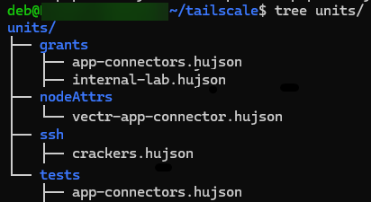
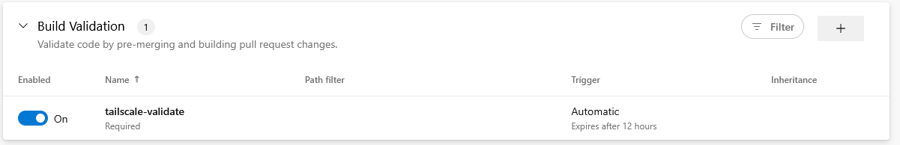
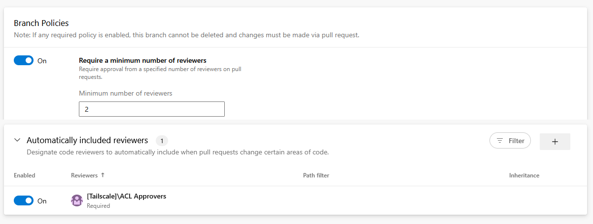
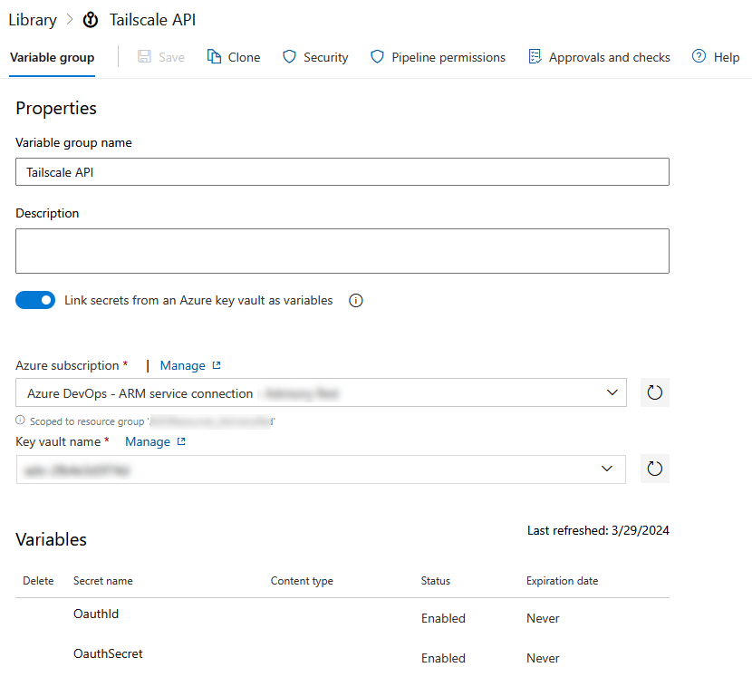

Git’ing gud with Tailscale
We use Tailscale as our VPN solution internally here at SRA for accessing a lot of our internal systems as well as for having a static egress IP (via exit nodes) for services that only allow IP-based access controls. We developed a GitOps solution to manage the Tailscale policy that governs our network. In this blog, we will walk through this solution.
The Policy File⌗
Each Tailscale customer network (the “Tailnet”) is governed by a policy file defined in HuJSON. Essentially just JSON with comments and trailing commas and another name for JWCC. The policy specification is fairly involved and feature rich, but at its core, it manages Grants that allow or deny connections to destinations. These Grants are fairly expressive and allow for you to specify sources/destinations not just by IPs and ranges, but also by user principals, directory groups, roles, and tags.
Unfortunately, Tailscale does not provide fine-grained access controls to policies. You cannot delegate access to edit routes for specific network segments or users. You can either edit the entire policy or nothing.
To workaround this, we moved policy file management to our internal source control system, Azure DevOps (“ADO”).
GitOps⌗
GitOps is just management of infrastructure resources via Git. In our case, we manage write access to a policy HuJSON file via Azure DevOps’ repository access controls then push the policy changes to our Tailnet via a pipeline.
The policy file is a singular HuJSON document, which is not particularly conducive to easy management since it makes it difficult to see which sections apply to any given area. In our approach, we broke the policy file into smaller HuJSON files, taking inspiration from conventions seen in Linux configuration file management (e.g., Apache/nginx sites, RC files, crontabs, etc). Then we stitch it back together before pushing. This makes management much easier, as someone reviewing the policy or a pull request (PR) can focus on an individual concern(s). When new services are added, they are contained in their individual policy file.

This structure also allows you leverage your source control system’s path-based rules. For example, you can trigger validation or have stricter controls for grants while being more lenient for additions to tests.
We wrote a small Python utility to combine these individual files together. The script is packaged into a Wheel then made available to the build pipeline via an internal package repository hosted on Azure DevOps’ Artifacts. A minimal version of this is included below:
import pathlib
import argparse
import json
from pywuffs import JsonDecoderQuirks
from pywuffs.aux import JsonDecoder, JsonDecoderConfig
_decoder_config = JsonDecoderConfig()
# JWCC is basically just HuJSON by another name.
# Wuffs is used for loading HuJSON files.
# The Wuffs JSON CLI utility, jsonptr, support JWCC
# Quirks for JWCC are found here:
# https://github.com/google/wuffs/blob/3d6c609dc12de3c81e1b8079ceecf96370b086a2/example/jsonptr/jsonptr.cc#L785
_decoder_config.quirks = [
JsonDecoderQuirks.ALLOW_COMMENT_LINE,
JsonDecoderQuirks.ALLOW_COMMENT_BLOCK,
JsonDecoderQuirks.ALLOW_EXTRA_COMMA,
]
_decoder = JsonDecoder(_decoder_config)
def _load_hujson_file(path: pathlib.Path) -> dict:
"""
Given a path, load the file contents then attempt to deserialize using Wuffs
:param path: Path to HuJSON file
"""
data = path.read_bytes()
decoded = _decoder.decode(data)
if decoded.error_message == "":
return decoded.parsed
else:
raise Exception(f"Cannot load JSON from {path.as_posix()}")
def main(out_file: str, units: str):
"""
Load all HuJSON files from the given units directory and stitch into single standard JSON file
The units directory is essentially a file system equivalent of the Tailnet ACL file contents.
The structure should be
[units directory]
|- root.hujson
|- <key 1 directory>
|- <hujson file>
|- ...
|- <key 2 directory>
|- <hujson file>
|- ...
Where "root.hujson" contains the top-level keys for the ACL file, such as the "tagOwners" key.
Each key directory should be named after the ACL key, such as "ssh", "acls", and "tests".
Each file in that directory should be a list item to append to that key.
For example, units/ssh/foo-1.json with the following contents:
[{"action": "check", "src": ["bar@example.com"], "dst": ["tag:baz"], "users": ["autogroup:nonroot"]}]
Will get added to the final ACL JSON as
"ssh": [{"action": "check", "src": ["bar@example.com"], "dst": ["tag:baz"], "users": ["autogroup:nonroot"]}, ...]
"""
out_file = pathlib.Path(out_file)
units_root = pathlib.Path(units)
root_json = units_root / "root.hujson"
root_json = _load_hujson_file(root_json)
for json_file in units_root.rglob("*/*.hujson"):
root_json.setdefault(json_file.parent.name, []).extend(_load_hujson_file(json_file))
out_file.write_text(json.dumps(root_json, indent=4))
def cli_main():
parser = argparse.ArgumentParser(prog="tailnetgen")
parser.add_argument("-o", "--out-file", required=True)
parser.add_argument("-u", "--units", required=False, default="units/")
args = parser.parse_args()
main(args.out_file, args.units)
if __name__ == "__main__":
cli_main()
To modify the policy, users open a pull request against the primary branch. This triggers a validation pipeline that generates the new policy then validates it against Tailscale’s validation API, which verifies both the correctness of the JSON and runs any defined policy tests.

Once the pipeline runs and validates, two human reviewers are required to approve the change.

Finally, once the approved changes are merged, another pipeline triggers to push the updated policy into production.
For both the validation and production pipelines, we use Tailscale’s gitops-pusher CLI utility as a client for the Tailscale API. Credentials are stored in an Azure Key Vault accessible by the pipeline’s Service Principal.

Tailsnitch⌗
Earlier this year, Adversis released tailsnitch, a CLI tool for performing security auditing of Tailscale environments. It covers both the policy file and tenant configurations.
In our evaluations, some of the checks seemed useful. However, its operating model is incompatible with our GitOps approach. Tailsnitch works against your production configurations, always pulling data live. This means you cannot validate that a change is insecure before pushing it to production. In our case, we’d want to run it during the validation phase against our policy candidate then block the merge if its found to be insecure.
However, some preliminary works shows that you can simply patch the policy lookup to achieve “offline” evaluation. The below patch file overrides the GetACLHuJSON (pkg/client/client.go) function to use a local policy file defined in the environment variable ACL_FILE_PATH. After applying the patch (patch -p0 < patch) then rebuilding tailsnitch (make build), policy evaluation functions will evaluate the local policy for issues (but online functions like evaluating tenant configuration will fail).
--- pkg/client/client.go
+++ pkg/client/client.go
@@ -243,14 +243,17 @@ func (c *Client) GetACL(ctx context.Context) (*tailscale.ACL, error) {
// GetACLHuJSON fetches the ACL policy in HuJSON format
func (c *Client) GetACLHuJSON(ctx context.Context) (*tailscale.ACLHuJSON, error) {
- if err := c.wait(ctx); err != nil {
- return nil, err
- }
- acl, err := c.ts.ACLHuJSON(ctx)
+ path := os.Getenv("ACL_FILE_PATH")
+
+ data, err := os.ReadFile(path)
if err != nil {
- return nil, classifyError(err, "GetACLHuJSON", "ACL policy")
+ return nil, err
}
- return acl, nil
+
+ var acl tailscale.ACLHuJSON
+ acl.ACL = string(data)
+
+ return &acl, nil
}
// GetDevices fetches all devices in the tailnet
Closing⌗
If you have any questions or concerns, feel free to reach out to @2xxeformyshirt.